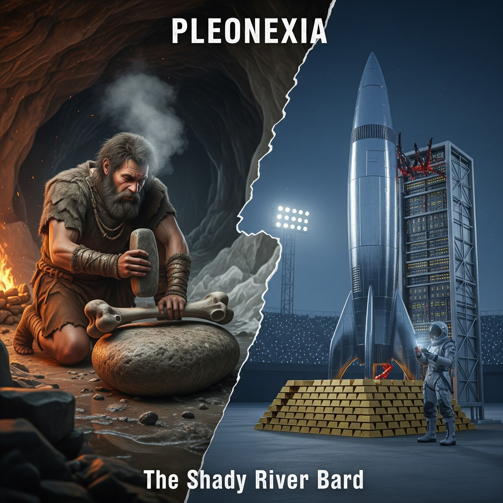

PLEONEXIA
An unblinking, 13-track sonic dissertation examining the moral, biological, and mathematical pathology of modern hyper-wealth. Juxtaposing the harsh caloric baseline of Pleistocene human survival against the abstract absurdity of a \$500 billion personal hoard, Pleonexia traces the arc of public subsidy extraction, bureaucratic demolition, and the frantic escape to Mars.

13-Track Concept Jukebox & Lyrics Deck
Stream studio recordings, inspect anthropological & economic theory dossiers, and explore complete literary lyrics across all four movements.
1. The Fat Factory
Narrative Context
Loading narrative summary...
Theoretical Framework
Loading theoretical analysis...
Lyrics loading...
Thematic Exhibits & Research Foundations
Deep investigative analyses bridging Pleistocene archaeology, public subsidy audits, austerity economics, and Longtermist escapism.
The Neumark-Nord Fat Factory · 125,000 Years Before Present
At the Neumark-Nord archaeological excavation in modern-day Germany, researchers uncovered evidence of specialized Neanderthal bone-breaking processing sites. In the sub-arctic conditions of glacial Europe, hominins required a staggering 4,070 calories per day merely to maintain metabolic equilibrium and prevent death from hypothermia. Currency was not gold or digital speculative code; it was lipids, marrow, and animal fat extracted through exhausting manual labor.
Subsidy City: Forensic Deconstruction of the "Self-Made" Titan
The myth of modern tech capital asserts that fortunes are built through solitary genius in a garage. Forensic audits reveal the opposite: modern hyper-wealth is constructed through massive public underwriting. From the pivotal \$465 million Department of Energy loan in 2010 to billions in consumer EV tax subsidies and lucrative Space Force launch contracts, public treasuries funded the ladder that was promptly pulled up.
The Micro-Cruelty of Austerity & The Rural Healthcare Collapse
When bureaucratic "efficiency" is weaponized, the cuts do not trim administrative fat; they sever essential lifelines. Across America, the annual national school lunch debt sits at \$194 million—a sum the modern oligarch accumulates in hours of passive market appreciation, yet children are stamped and shamed in school cafeterias. Meanwhile, over 30% of rural community hospitals face closure because saving working-class lives fails the test of corporate margin optimization.
The Mars Terminal: Leaving 99.98% of Humanity on the Tarmac
The climax of Pleonexia deconstructs the seductive moral evasion of "Longtermism"—the belief that hypothetical future simulations in deep space matter more than living human beings today. The Technocrat proposes an off-world colony of 1,000,000 citizens paying \$100,000 per ticket. Mathematically, 99.98% of the global population is abandoned to manage the ecological devastation created by the extraction that funded the rocket.
The Math of Absurdity: Two Timelines of Capital
Hard physical arithmetic proving that labor cannot generate modern hyper-wealth, and that an individual hoard cannot be consumed through normal human existence.
The 50,000-Year Saver
AccumulationSuppose an immortal human began working at the dawn of the Upper Paleolithic revolution (50,000 B.P.) and saved \$10,000 every single morning without spending a single dollar on food, shelter, or healthcare:
The Roman Emperor's Burn
ConsumptionSuppose an individual attempted to spend a personal fortune of \$500 billion by burning \$1,000,000 cash every single day starting at the Fall of the Western Roman Empire (476 A.D.):